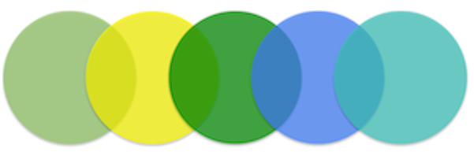

Welcome!
This site contains tutorials for analysing bacterial “omics” data.
The site is in draft mode. Training modules are being developed and added progressively. Please send issues or suggestions to Anna Syme at VLSCI.
Data sources
- Genomics
- Transcriptomics
- Proteomics
- Metabolomics
Analysis platforms
- Unix command line
- Galaxy workflow system
Platform
